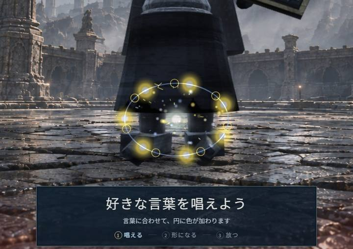
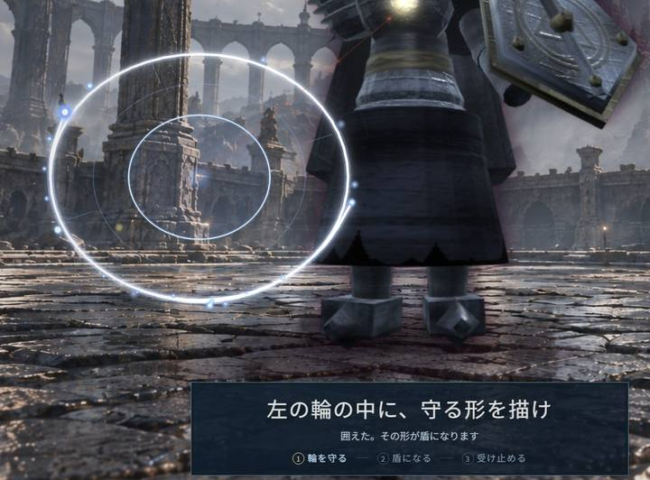
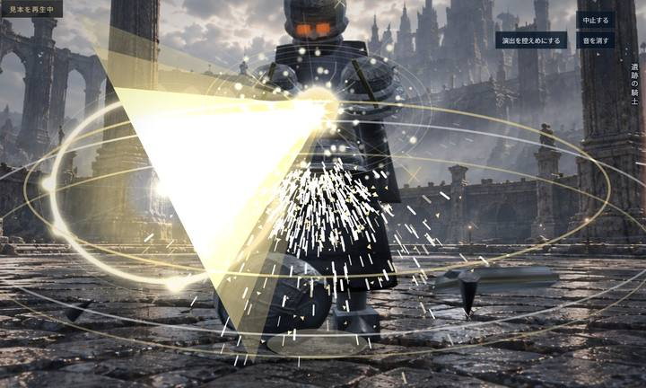

はじまりの魔法：90秒
声と手で魔法を作って、目の前の騎士を倒すゲームです。失敗はありません。魔法は必ず出て、攻撃は必ず防げます。
やることは3回
-

1唱える
声だけで魔法を作ります。手は使いません。
例：「雷よ、七つに分かれろ」 -

2守る
左に赤い輪が出たら、手でまわりを囲みます。囲んだ形が盾になって、騎士の一撃を止めます。
-

3とどめ
手で描いて、合図が出たら唱えます。大きな魔法が騎士に当たります。
90秒で終わると、作った3つの魔法が「魔導書」に残ります。
使える言葉の例
- 炎
- 氷
- 雷
- 風
- 光
- 闇
- 壁
- 球
- 光線
- 七つ
- 追え
- 守れ
言葉を変えると、色と形が変わります。
パソコンの前で
- ヘッドセットをつける
- カメラに手のひらを向ける
- 「魔法をつくる」を押す
3秒の合図のあと、始まります。
カメラの映像と声は、パソコンの外へ送りません。録画も録音もしません。